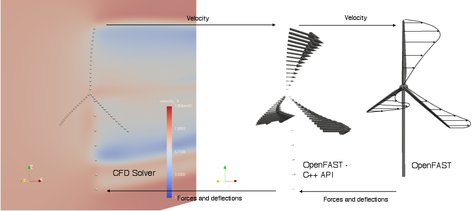
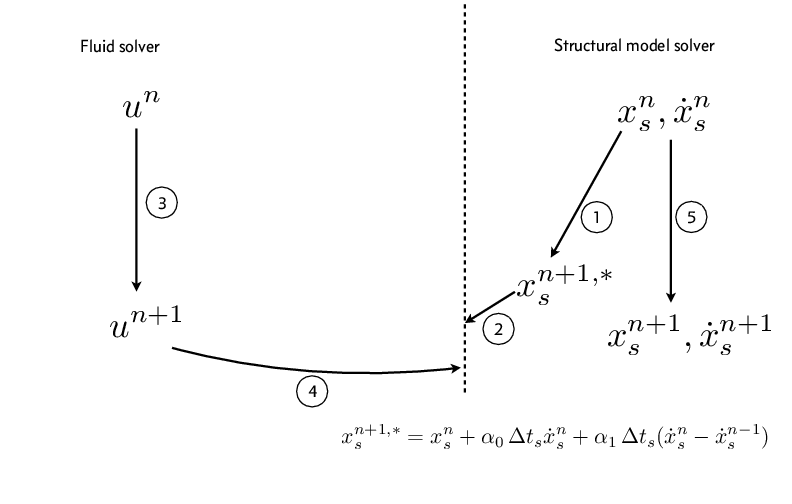
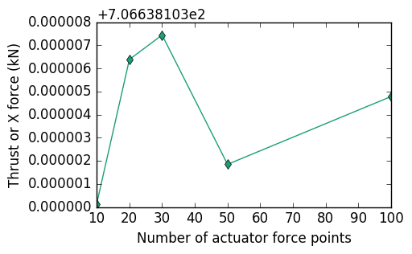
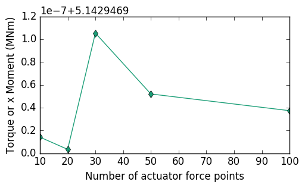

6.3.1. OpenFAST C++ 애플리케이션 프로그래밍 인터페이스
OpenFAST는 C++의 외부 프로그램에서 풍력터빈 시뮬레이션을 구동하기 위한 C++ API(응용 프로그래밍 인터페이스)를 제공합니다. C++ API는 주로 FSI(유체 구조 상호 작용) 애플리케이션용 CFD(전산 유체 역학) 솔버와 OpenFAST를 통합하기 위해 개발되었습니다. 현재는 액츄에이터 라인 방법을 사용하여 FSI 시뮬레이션을 지원하며 가까운 시일 내에 블레이드 분해 FSI 시뮬레이션을 지원할 계획입니다. C++ API는 여러 풍력터빈의 OpenFAST 시뮬레이션을 병렬로 실행하는 외부 드라이버 프로그램이나 글루 코드를 만드는 데에도 사용할 수 있습니다.
C++ API는 다음에서 정의되고 구현됩니다. fast::OpenFAST 클래스. C++에서 OpenFAST용 글루 코드를 작성하려는 사용자는 OpenFAST 클래스의 개체를 인스턴스화하고 이를 사용하여 터빈 시뮬레이션을 구동해야 합니다. 샘플 글루 코드 FAST_Prog.cpp 는 C++ API 사용법의 데모로 제공됩니다. 글루 코드를 사용하면 여러 프로세서에 걸쳐 직렬 또는 병렬로 OpenFAST를 사용하여 여러 터빈을 시뮬레이션할 수 있습니다. 메시지 전달 인터페이스(MPI)는 다양한 터빈 인스턴스를 병렬로 실행하는 데 사용됩니다. FAST_Prog.cpp의 축약된 버전은 다음과 같습니다. 강조 표시된 줄은 OpenFAST 클래스의 사용을 나타냅니다.
#include "OpenFAST.H"
#include "yaml-cpp/yaml.h"
#include <iostream>
#include <mpi.h>
void readTurbineData(int iTurb, fast::fastInputs & fi, YAML::Node turbNode) {
//Read turbine data for a given turbine using the YAML node
}
void readInputFile(fast::fastInputs & fi, std::string cInterfaceInputFile, double * tEnd) {
//Read input data for a given turbine using the YAML node
}
int main() {
int iErr;
int nProcs;
int rank;
iErr = MPI_Init(NULL, NULL);
iErr = MPI_Comm_size( MPI_COMM_WORLD, &nProcs);
iErr = MPI_Comm_rank( MPI_COMM_WORLD, &rank);
double tEnd ; // This doesn't belong in the OpenFAST - C++ API
int ntEnd ; // This doesn't belong in the OpenFAST - C++ API
std::string cDriverInputFile="cDriver.i";
fast::OpenFAST FAST;
fast::fastInputs fi ;
readInputFile(fi, cDriverInputFile, &tEnd);
ntEnd = tEnd/fi.dtFAST; //Calculate the last time step
FAST.setInputs(fi);
// In a parallel simulation, multiple turbines have to be allocated to processors.
// The C++ API can handle any allocation of turbines on an arbitrary number of processors
FAST.allocateTurbinesToProcsSimple(); // Use this for a simple round robin allocation of turbines to processors.
// Or allocate turbines to procs by calling "setTurbineProcNo(iTurbGlob, procId)" for each turbine.
FAST.init();
if (FAST.isTimeZero()) {
FAST.solution0();
}
if( !FAST.isDryRun() ) {
for (int nt = FAST.get_ntStart(); nt < ntEnd; nt++) {
FAST.step();
}
}
FAST.end() ;
MPI_Finalize() ;
return 0;
}
OpenFAST 클래스에 대한 모든 입력은
렌더링하려면 fast::fastInputs.
수정사항: doxygenclass
클래스 구조를 렌더링하려면 가 필요합니다. fast::fastInputs 클래스 구조
개체의 fast::fastInputs 클래스는 유형의 구조체 벡터를 보유할 것으로 예상됩니다.
시뮬레이션에서 터빈 수의 fast::turbineDataType 및 크기.
수정사항: doxygenstruct 가 필요합니다. fast::turbineDataType 클래스 구조
6.3.1.1. 액추에이터 라인 시뮬레이션을 위한 C++ API 사용
C++ API는 주로 FSI(유체 구조 상호 작용) 애플리케이션용 CFD(전산 유체 역학) 솔버와 OpenFAST를 통합하기 위해 개발되었습니다. 오늘날 풍력 에너지 애플리케이션을 위한 주력 FSI 알고리즘은 Actuator Line 알고리즘입니다. [cpp-CLM+12]. Actuator Line 알고리즘은 터빈이 유동장에 미치는 영향을 일련의 점 힘으로 나타냅니다. 액추에이터 포인트 . AeroDyn의 블레이드 요소 모멘텀 이론의 사용은 액추에이터 라인 시뮬레이션을 위한 CFD 솔버와 OpenFAST를 인터페이스하도록 수정되었습니다. CFD 솔버는 터빈 근처의 속도 정보를 제공하는 OpenFAST용 유입 모듈이 됩니다. OpenFAST에서는 유도 계수 계산이 꺼지고 AeroDyn은 단순히 조회 테이블과 선택적인 동적 실속 모델을 사용하여 CFD 솔버에서 수신한 유입 필드 정보를 기반으로 터빈의 부하를 계산합니다. 유도 모델은 다음을 선택하여 OpenFAST에서 꺼야 합니다.
AeroDyn 입력 파일의 WakeMod=0 . OpenFAST는 블레이드와 타워를 따르는 선 힘을 액추에이터 라인 알고리즘에 대한 일련의 점 힘으로 묶습니다. 그림 6.1 는 액추에이터 라인 애플리케이션을 위한 OpenFAST와 CFD 솔버 간의 정보 전송을 보여줍니다.


그림 6.1 액추에이터 라인 애플리케이션용 C++ API를 통해 CFD 솔버와 OpenFAST 간의 속도, 하중 및 처짐 전송을 보여주는 그림입니다.
CFD 솔버는 드라이버 프로그램 OpenFAST에 결합된 액추에이터 라인 FSI 시뮬레이션을 위한 . C++ API는 다음을 허용합니다. 서브스테핑 여기서 드라이버 시간 단계는 OpenFAST 시간 단계의 정수배입니다(\(\Delta_t^{CFD} = n \Delta_t^{OpenFAST}\)). OpenFAST용 C++ API의 현재 구현에서는 유체(CFD)와 구조(OpenFAST) 솔버 간의 직렬 시차형 FSI 체계가 가능합니다. 그림 6.2 는 시간 단계에서 시뮬레이션을 이동하기 위해 느슨하게 결합된 직렬 스태거 FSI 방식의 제안된 구현을 보여줍니다. n 에 액추에이터 라인 애플리케이션용 n+1 . 결합 알고리즘의 반복을 통해 강력하게 결합된 FSI 방식을 구성할 수 있습니다. "외부" 반복을 통한 그림 6.2 .


그림 6.2 액추에이터 라인 애플리케이션용 C++ API를 통해 구성할 수 있는 기존 직렬 스태거 FSI 체계입니다.
OpenFAST는 다양한 모듈에 대해 서로 다른 공간 메시를 사용합니다. [cpp-Jon13]. 터빈의 구조 모델(ElastoDyn/BeamDyn)에 정의된 메시를 따라 액추에이터 지점을 정의합니다. 사용자는 입력 매개변수를 통해 각 블레이드와 타워를 따라 필요한 액추에이터 포인트 수를 정의합니다.
각 터빈에 대한 numForcePtsBlade 및 numForcePtsTower . 액추에이터 포인트 수는 모든 블레이드에서 동일해야 합니다. C++ API는 OpenFAST를 사용하여 구조 모델에서 노드의 선형 보간을 통해 요청된 수의 액추에이터 지점을 생성합니다. OpenFAST의 메쉬 매핑 알고리즘 [cpp-SJJ15] 는 구조 모델의 편향과 AeroDyn의 하중을 액추에이터 지점으로 전달하는 데 사용됩니다. 구별하려면
Aerodyn 포인트의 액추에이터 포인트 , OpenFAST C++는 용어를 사용합니다.
액추에이터 포인트용 forceNodes 및
Aerodyn 포인트용 velNodes (속도 노드). 다음 코드는 C++ API를 사용하여 액추에이터 라인 애플리케이션을 위한 "외부" 반복과 함께 강력하게 결합된 FSI 체계를 구현하는 방법을 보여줍니다. 이 샘플 코드 조각은 속도를 설정합니다. velNodes 에서 좌표와 집중 힘에 접근합니다. forceNodes.
std::vector<double> currentCoords(3);
std::vector<double> sampleVel(3);
for (int iOuter=0; iOuter < nOuterIterations; iOuter++) {
FAST.predict_states(); //Predict the location and force at the actuator points at time step 'n+1'.
for(iTurb=0; iTurb < nTurbines; iTurb++) {
for(int i=0; i < FAST.get_numVelPts(iTurb); i++) {
// Get actuator node co-ordinates at time step 'n+1'
FAST.getForceNodeCoordinates(currentCoords, i, iTurb, fast::np1);
//Move the actuator point to this co-ordinate if necessary
// Get force at actuator node at time step 'n+1'
FAST.getForce(actForce, i, iTurb, fast::np1);
//Do something with this force
}
}
// Predict CFD solver to next time step here
for(iTurb=0; iTurb < nTurbines; iTurb++) {
for(int i=0; i < FAST.get_numVelPts(iTurb); i++) {
// Get velocity node co-ordinates at time step 'n+1'
FAST.getVelNodeCoordinates(currentCoords, i, iTurb, fast::np1);
//Sample velocity from CFD solver at currentCoords into sampleVel here
// Set velocity at the velocity nodes at time step 'n+1'
FAST.setVelocity(sampleVel, i, iTurb, fast::np1);
}
}
FAST.update_states_driver_time_step(); // Predict the state of OpenFAST at the next time step
}
// Move OpenFAST to next CFD time step
FAST.advance_to_next_driver_time_step();
6.3.1.2. 구현
C++ API는 C-Fortran 인터페이스를 사용하여 내부적으로 Fortran 드라이버와 동일한 기능을 호출하여 OpenFAST를 제 시간에 발전시킵니다. FAST_Library.f90에는 C++ API에서 호출할 수 있는 모든 함수가 포함되어 있습니다. C++ API와 Fortran 모듈 간의 해당 기능 중 일부가 다음 표에 나와 있습니다.
C++ API - OpenFAST.cpp |
포트란 - FAST_Library.f90 |
FAST_Subs.f90 |
|---|---|---|
init() |
FAST_AL_CFD_Init |
FAST_InitializeAll_T |
솔루션0() |
FAST_CFD_Solution0 |
FAST_Solution0_T |
prework() |
FAST_CFD_Prework |
FAST_Prework_T |
FAST_CFD_Store_SS |
FAST_Store_SS |
|
update_states_driver_time_step() |
FAST_CFD_UpdateStates |
FAST_UpdateStates_T |
FAST_CFD_Reset_SS |
FAST_Reset_SS |
|
advance_to_next_driver_time_step() |
FAST_CFD_AdvanceToNextTimeStep |
FAST_AdvanceToNextTimeStep_T |
해당 FAST_Solution_T 서브루틴 FAST_Subs.f90 는 세 가지 서브루틴으로 분할됩니다. 여러 가지를 허용하는 FAST_Prework_T, FAST_UpdateStates_T 및 FAST_AdvanceToNextTimeStep_T 여러 항목을 허용하기 위해 외부 외부 드라이버 프로그램을 사용한 반복. 추가 서브루틴 FAST_Store_SS 및 FAST_Reset_SS 는 OpenFAST를 사용할 때 1시간 이상 뒤로 이동하기 위해 도입되었습니다. 서브스테핑 외부 드라이버 프로그램이 포함된 . 외부 드라이버 프로그램에서 C++ API를 사용할 때 Fortran 서브루틴에 액세스하는 일반적인 순서는 다음과 같습니다.
call FAST_AL_CFD_Init
call FAST_CFD_Solution0
do i=1, nTimesteps
if (nSubsteps .gt. 1)
call FAST_CFD_Store_SS
else
call FAST_CFD_Prework
end if
do iOuter=1, nOuterIterations
if (nSubsteps .gt. 1)
if (iOuter .ne. 1) then
! Reset OpenFAST back when not the first pass
call FAST_CFD_Reset_SS
end if
do j=1, nSubsteps
! Set external inputs into modules here for the substep
call FAST_CFD_Prework
call FAST_CFD_UpdateStates
call FAST_CFD_AdvanceToNextTimeStep
end do !Substeps
else
call FAST_CFD_UpdateStates
end if
end do !Outer iterations
if (nSubsteps .gt. 1) then
! Nothing to do here
else
call FAST_CFD_AdvanceToNextTimeStep
end if
end do
액추에이터 지점에 대한 하중 및 편향 매핑은 다음에서 수행됩니다.
OpenFAST의 ExternalInflow 모듈. C++ API는 BeamDyn과 ElastoDyn을 모두 사용하여 블레이드를 모델링하는 것을 지원합니다. BeamDyn을 사용하여 블레이드를 모델링할 때 C++ API에서는 액추에이터 라인 시뮬레이션을 위한 사다리꼴 구적법 선택과 함께 각 블레이드에 대해 단 1개의 유한 요소만 사용해야 합니다.
매핑 절차에 대한
6.3.1.3. 테스트
매핑 절차 구현에 대한 테스트는 다음과 같습니다. OpenFAST는 C++ API를 사용하여 실행되어 지정된 속도로 한 시간 단계 동안 Jonkman 5-MW(이전의 NREL 5-MW) 터빈을 시뮬레이션합니다.
모든 속도 노드에서 \(8 m/s\) 및 유도 없음(WakeMod=0). 액츄에이터 힘 노드의 수는 10에서 100까지 다양하며 속도 노드의 수는 17로 고정됩니다. 그림 6.3 및 그림 6.4 는 추력과 토크가 다음보다 적게 변한다는 것을 보여줍니다.
액츄에이터 힘 노드의 수가 다양할 때 각각 \(1.1 \times 10^{-6}\%\) 및 \(2 \times 10^{-6}\%\) 액추에이터 힘 절점 수를 다음 범위에서 변경할 때 각각 \(10-100\).


그림 6.3 다양한 수의 액추에이터 힘 노드를 사용하여 추력 변화 동일한 수의 속도 노드에 대한 OpenFAST .


그림 6.4 다양한 수의 액추에이터 힘 노드를 사용한 토크 변화 OpenFAST .
6.3.1.4. 참고문헌
- cpp-CLM+12
Matthew Churchfield, Sang Lee, Patrick Moriarty, Luis Martinez, Stefano Leonardi, Ganesh Vijayakumar 및 James Brasseur. 풍력 발전소 공기역학의 대형 와류 시뮬레이션. 미국 항공 우주 연구소, 2017/07/18 2012. URL: https://doi.org/10.2514/6.2012-537, doi:doi:10.2514/6.2012-537.
- cpp-Jon13
제이슨 M. 존크만. 고속 풍력터빈 CAE 도구를 위한 새로운 모듈화 프레임워크입니다. 기술 보고서 NREL/CP-5000-57228, 국립 재생 에너지 연구소, 2013년 1월.
- cpp-SJJ15
Michael A. Sprague, Jason M. Jonkman 및 Bonnie J. Jonkman. 풍력터빈 시뮬레이션을 위한 빠른 모듈형 프레임워크: 새로운 알고리즘 및 수치 예제. 기술 보고서 NREL/CP-2C00-63203, 국립 재생 에너지 연구소, 2015년 1월.